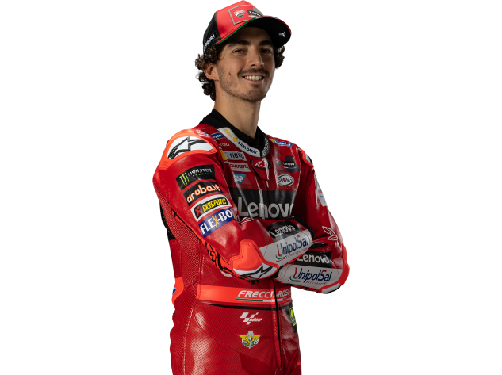
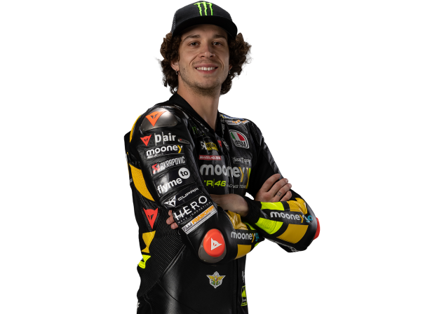

Que es el MotoGP
MotoGP es la máxima categoría del Campeonato Mundial de Motociclismo, considerado el certamen internacional más importante en el ámbito de motociclismo de velocidad. Su organización viene determinada por la Federación Internacional de Motociclismo (FIM), al igual que ocurre con las otras categorías del campeonato (Moto2 y Moto3).
Posiciones de 2023

1 Francesco Bagnaia
Ducati Lenovo Team Ducati
1°

72 Marco Bezzecchi
Mooney VR46 Racing Team Ducati
2°

89 Jorge Martin
Prima Pramac Racing Ducati
3°
INFORMACION
TODO SE TORCIÓ EN 2015
Las buenas relaciones entre el joven campeón y el ídolo del motociclismo en el siglo XXI habían sido buenas hasta que se comenzaron a enturbiar en 2015. A pesar de que el 93 ganaba carreras, se estaba quedando fuera de la pugna por el título. Así que Rossi sabía que solo le quedaba como rival su compañero Lorenzo en la que quizás fuera su última oportunidad para alzarse con el ansiado décimo campeonato (por entonces tenía 36 años).
MotoGP: Jorge Martín aplastó en el sprint del GP de Alemania
Jorge Martín cosecha para el presente y para el futuro. Cada buena actuación que el español logra en el actual ejercicio le sirve para presentar credenciales para luchar por el torneo y para presionar hacia adelante. El piloto del equipo Pramac tenía, en 2022, la enorme ilusión de subirse en 2023 a la segunda Ducati oficial para reemplazar a Jack Miller.
TECNOLOGÍAS exclusivas de MOTOGP
La tecnología de MotoGP ha dado un salto de calidad impresionante. Es increíble cómo han mejorado los tiempos. Yamaha pretende revalidar su campeonato del mundo de MotoGP mientras que Honda tratará de recuperar su corona.Ducati pretende poner en pista a la moto tecnologícamente más avanzada de la parrilla. Eso sin descontar a las Suzuki, KTM y Aprilia.Todas las máquinas harán gala de tecnología como el Holeshot o los dobles fondos, incluyendo materiales nunca vistos en las motos de calle. Conoce esta tecnología en este vídeo.
¿Cuál es la diferencia entre MotoGP, Moto2 y Moto3?
En esta publicación, compartiremos información sobre las diferencias entre las clases de MotoGP, Moto2 y Moto3. En palabras simples, Motorcycle Grand Prix (MotoGP) incluye tres clases de carreras donde Moto2 y Moto3 son las ligas anteriores al campeonato Premier, MotoGP.